4. Working with the Browser
Live’s browser is the place where you interact with your library of musical assets: the Core Library of sounds included with the program, any additional sounds you’ve installed via Live Packs, presets, samples you’ve saved, built-in and third-party devices, and any folders on your hard drive that contain samples, tracks, etc. Additionally, you can access files from Ableton Cloud and Push in Standalone Mode via the browser’s Places section.
The browser contains several sections and controls for searching, filtering, browsing, and previewing content. These include the search bar, sidebar, filters, content pane, and other tools.
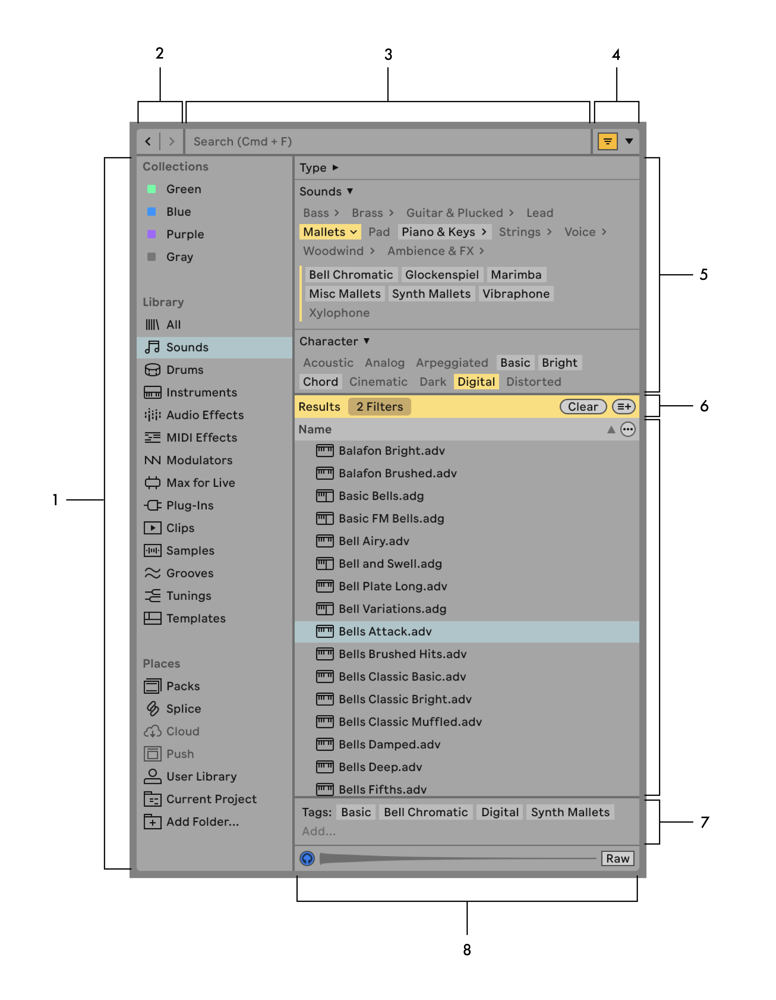
The browser’s sidebar contains the Collections, Library, and Places sections and their associated labels.
The Browse Back and Browse Forward buttons can be used to access the browser’s previous search or navigation states.
The search field helps you find browser items and tagged content.
The Show/Hide Filter toggle can be used to show or hide the browser’s filters, while the Filter View menu can be used to specify which filter groups are visible in the Filter View, and to toggle the Tag Editor, Quick Tags, and Auto Tags.
The Filter View contains a set of filter groups with associated tags which you can use to search for items in your library.
The Results bar appears when searching or filtering. It includes the Add Label button which you can use to save the results in a custom label. When filtering, the bar indicates how many filters are currently applied.
The content pane displays the items in whatever label is selected in the browser, or the results of searching and filtering.
The Preview tab displays a waveform for samples and clips, and plays back the sound when the Preview toggle is activated.
You can adjust how the width is split between the left and right panels of the browser by dragging the middle divider line horizontally. You can also expand the overall size of the browser by dragging its right edge to the right or its bottom edge to the bottom of Live’s window. Note that dragging the browser’s bottom edge will automatically close the Info View, as well the Clip View or Device View (whichever happens to be open).
It is also possible to set the browser to take up the full height of the application’s window by selecting the Full-Height Browser option from the View menu. When you select this option, the browser expands to the bottom of Live’s window, but the Info View, as well as the Clip View or Device View (whichever is currently active) remain open.
Working in the browser involves choosing one of the labels from the Collections, Library or Places sections in the sidebar, and then filtering or selecting the items that appear in the content pane. You can also use the search bar to look for specific items or tags.
4.1 Content Pane
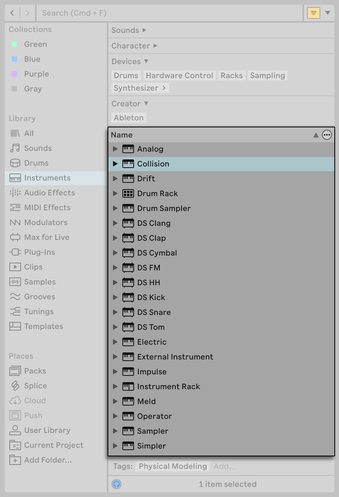
The content pane contains a list of items in a given label or the results of a search or filtering. The Name column is always visible, but you can also show additional columns by selecting them from the Content Options menu.
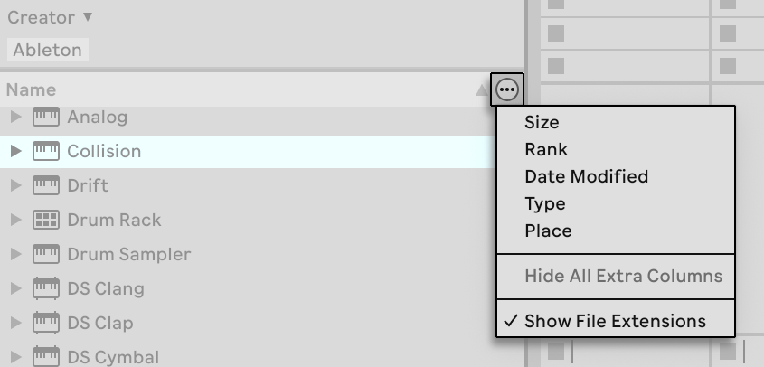
Once you select additional columns to be displayed, you can manually reorder them by clicking on a column name and dragging it to the desired position.
You can sort the items in the content pane in ascending or descending order in any column by clicking on the column name. Note that right-clicking on a column name also opens the Content Options menu.
The Content Options menu also includes the option to show or hide file extensions for the browser items.
4.2 Search Bar
To find browser content, type your desired search term(s) into the search bar. The results will include files that match all search terms, as opposed to any. For example, if you search for “electric bass” any items containing both “electric” and “bass” in their filenames will be displayed.
To search across all Library locations, select the All label or press CtrlF (Win) / CmdF (Mac) to automatically switch to the All label; this shortcut also places a cursor in the search field.
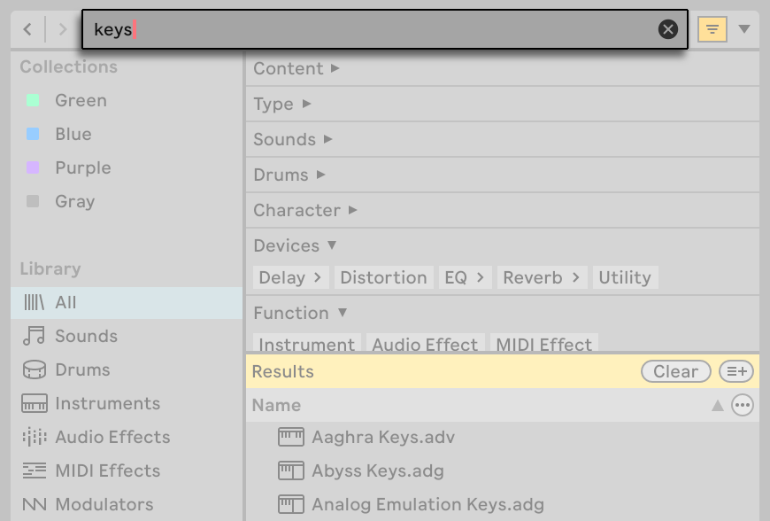
You can further refine your search by selecting tags from various filter groups to narrow the results. For example, if you want to find string sounds, you can type “strings” into the search field and then click on any tags in the Filters view to display results matching only those tag descriptions.
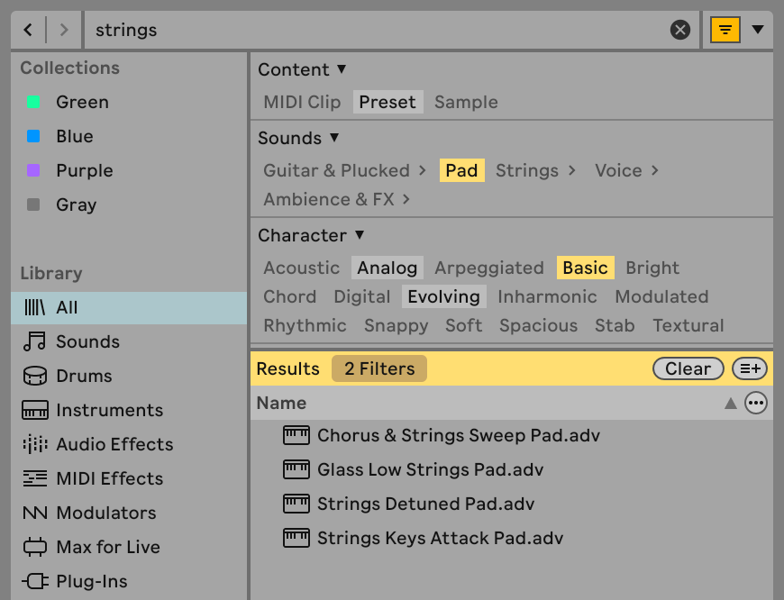
It is also possible to search for content via tags by typing # into the search bar followed by the tag name, e.g., #Drums. Auto-complete suggestions for tag names will appear as you start typing after the hashtag.
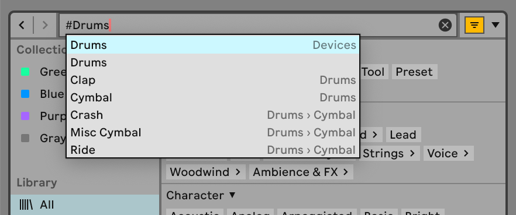
You can click the x button in the search bar to clear any search terms. Note that this does not reset the Filters view. You can use the Clear button in the Results bar to remove any selected tags as well as entered search terms.
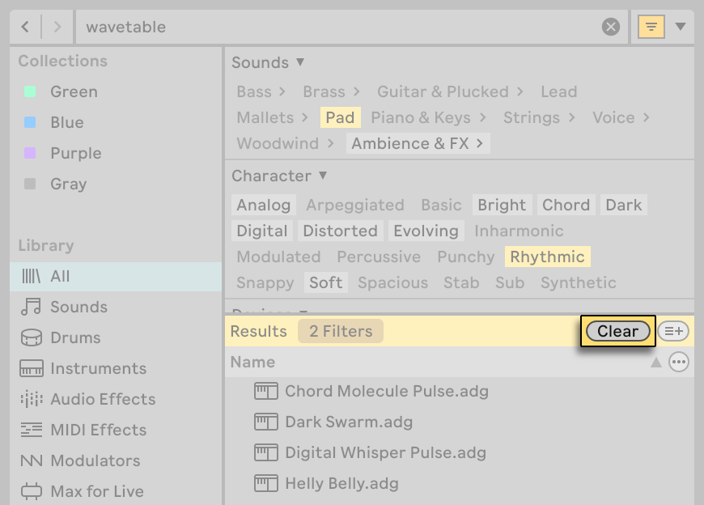
For mouse-free searching, we suggest the following sequence of keyboard actions:
- CtrlF (Win) / CmdF (Mac) to place a cursor in the search field and switch browser focus to the All label;
- Type your search terms or tag names;
- Down arrow key to jump to the search results;
- Up and down arrow keys to scroll the search results;
- Esc to clear the search field and show all items in the All label again. Any selected tags will be cleared as well.
4.2.1 Saving Search Results as Custom Labels
If you like the results of a particular search and want to quickly access them again in the future, you can create a custom user label containing those search results by clicking the Add Label button to the right of the Clear button.
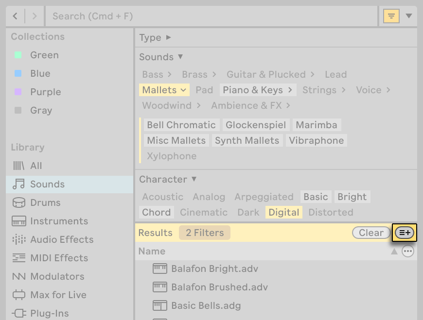
Once saved, you can access the label and its contents like any other label in the Library.
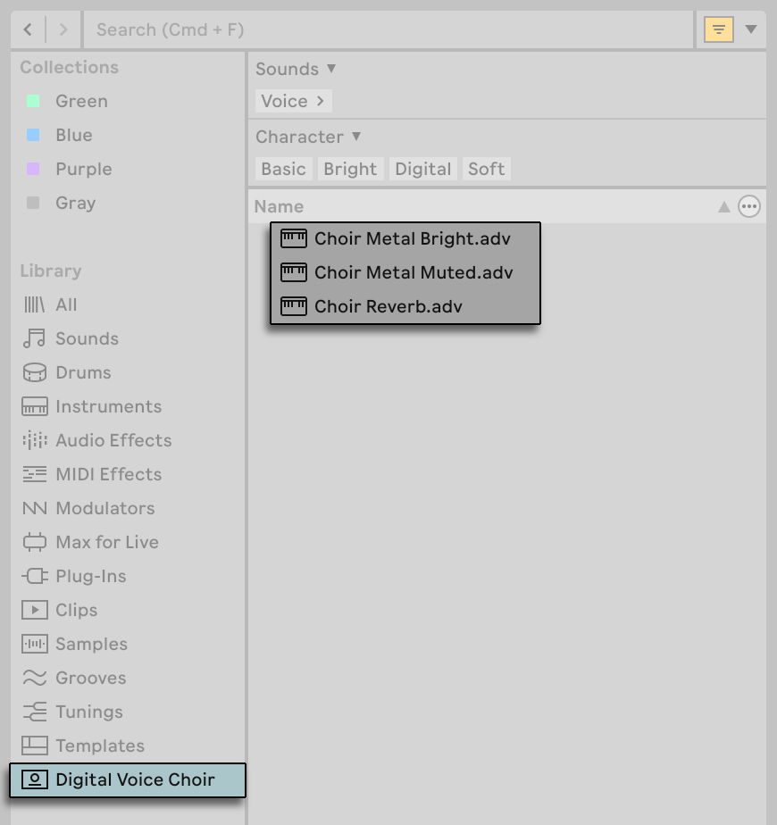
You can also use custom labels to store specific items in one place for easy access — similar to using the Collections labels — by tagging content with your own custom tags and then saving the search results into a new label.
If you no longer need a custom label you previously added, you can quickly remove it via its right-click context menu.
You can use a label’s context menu to rename both factory and custom labels. You can also select a different icon for any label via the context menu, which allows you to further customize your browser.
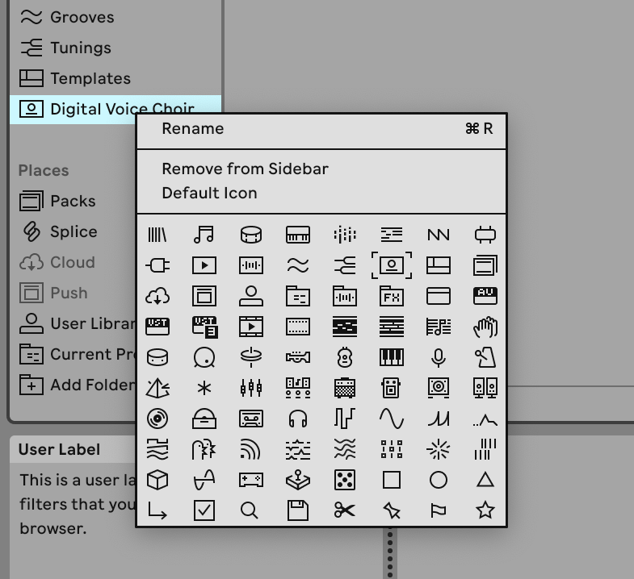
4.3 Browser History
The arrow buttons to the left of the search bar can be used to go forward or backwards in the browser’s history.
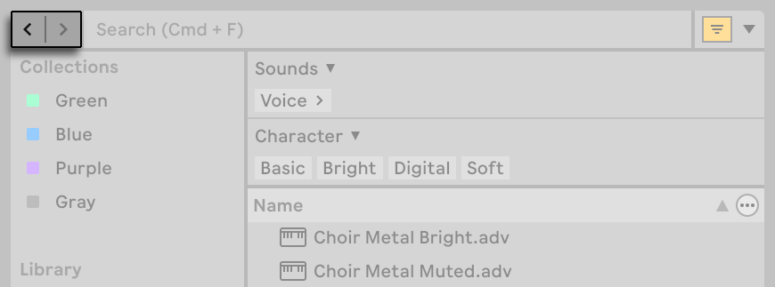
You can also use the following keyboard shortcuts:
- Go forward in the browser’s history: Ctrl] (Win) / Cmd] (Mac)
- Go back in the browser’s history: Ctrl[ (Win) / Cmd[ (Mac)
The history includes past searches as well as previous navigation states.
4.4 Filters and Tags
The browser includes a set of filters which can be used to search specific content using descriptive tags.
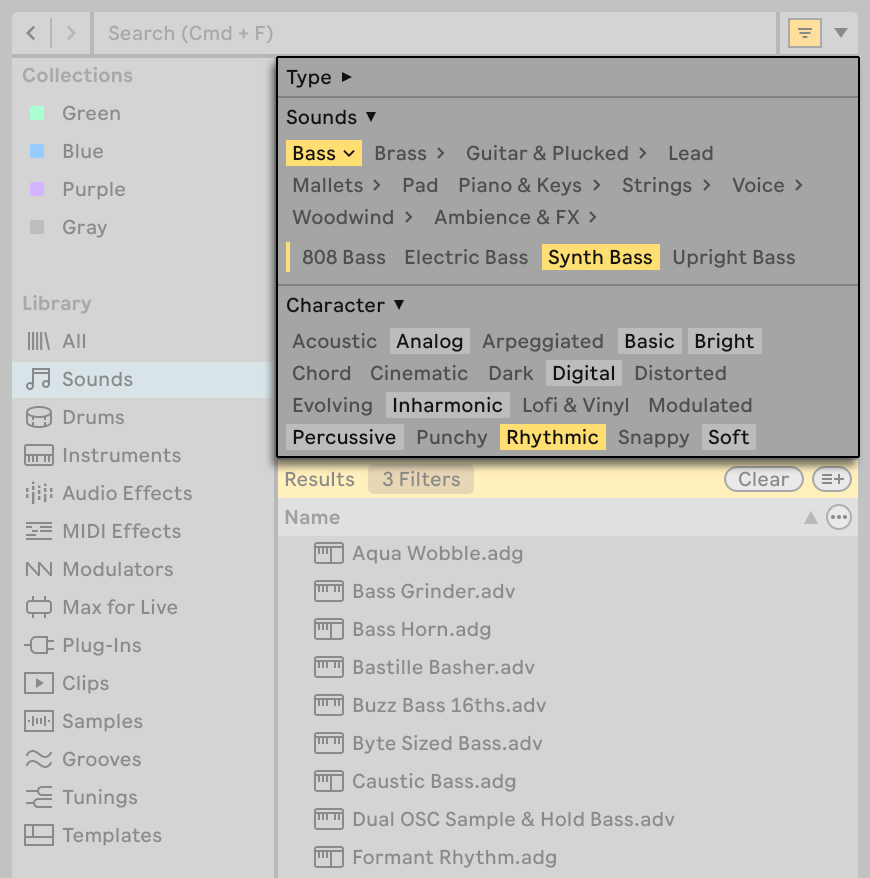
The Filter View section consists of filter groups and their associated tags. You can hide the section by pressing the Show/Hide Filter View toggle, or use the Filter View menu next to the toggle to customize which filter groups are visible.
4.4.1 Filter Groups
Each filter group contains a set of tags that you can click on to narrow the results that appear in the content pane. To select multiple tags in one group, use the Ctrl (Win) / Cmd (Mac) modifier when clicking on tags.
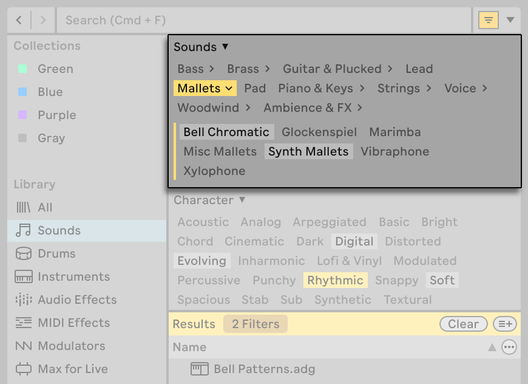
The set of available filter groups is unique to each label, and the state of enabled filters is saved and recalled when moving between Library labels. This means you can customize exactly which groups are shown for every label as needed.
To show additional or all filter groups and their tags, use the Filter View menu.
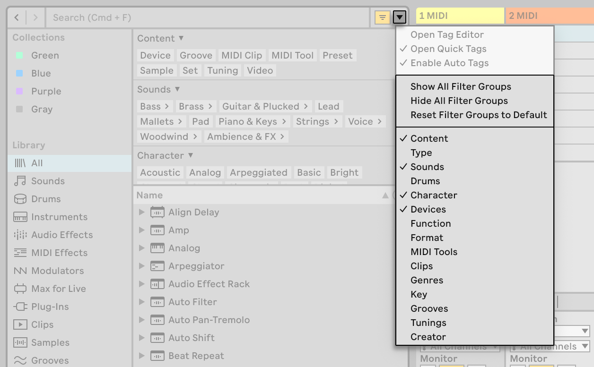
You can also right-click on individual filter group names in the Filter View section to hide those groups in a given label. Use the Filter View menu’s Reset Filter Groups to Default option to restore the label to its default set of visible filter groups.
The Results bar shows how many filters are applied at any given time. To reset the Filter View and remove any selected tags and search terms, click the Clear button in the Results bar.
You can save the filtered results in a custom user label by clicking the Add Label button to the right of the Clear button.
4.4.2 Tags
Tags are useful for quickly locating or organizing the browser content, especially if you create your own custom tags. Tags can also be a good way to discover content that you are not familiar with yet — simply select one of the tags in the Filter View and browse items associated with the tag.
All of Live’s factory content (i.e., content from the Core Library and Live Packs that come with each Live edition) is tagged with a set of descriptive tags. Content from the third-party Packs available in the Ableton webshop is tagged with the tags contained within the “Sounds” filter group.
It is not possible to remove the default tags from the factory items; however, you can assign other tags to those items and even add your own custom tags using the Tag Editor.
Live periodically runs a sound analysis, and as a part of this process assigns tags to user samples that are up to 60 seconds long. The tag assigned is one that best matches the sound of the sample as per the sound analysis.
Auto tags can be toggled using the Enable Auto Tags option in the Filter View menu, and can be removed or changed to user tags in the Tag Editor.
Live also assigns tags based on VST3 meta data to VST3 plug-ins in cases where the plug-ins use a VST Sub Category that maps to one of Live’s categories.
4.4.3 Tag Editor
The Tag Editor allows you to create and assign tags to any items in the browser. You can also create your own tag groups to further organize your tags library.
To open the Tag Editor, select the dedicated option from the Filter View menu.
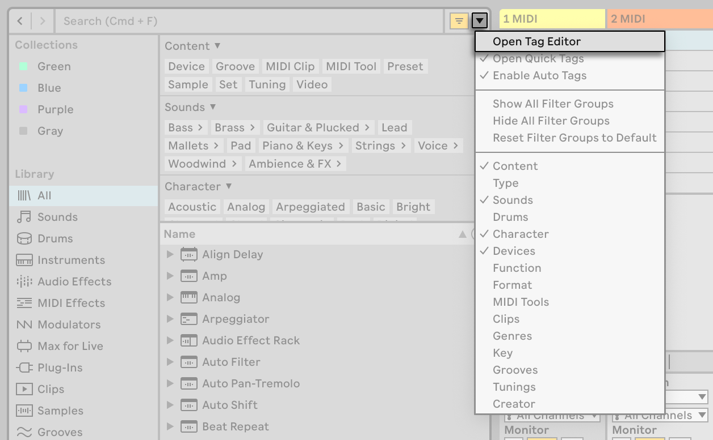
Once opened, you will see which tags are currently assigned to the selected browser item from the set of default filter groups.
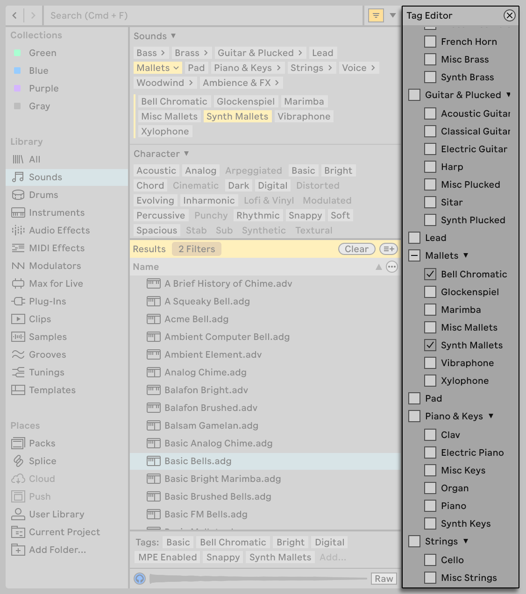
You can fold and unfold the groups by clicking on the arrow next to a group’s name. When a group containing an assigned tag is folded, the arrow is indicated with a bolder background.
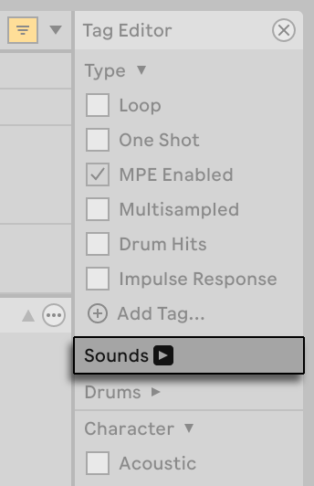
To assign or remove a tag to or from the selected browser item, check or uncheck the box next to the relevant tag. You can apply multiple tags to the same item by checking multiple boxes. To tag several items at once, hold Shift and select multiple files in the browser before applying the desired tags.
You can add custom tags to any filter group using the Add Tag… option at the end each group.
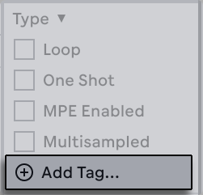
You can also create your own groups using the Add Group… option at the bottom of the Tag Editor.
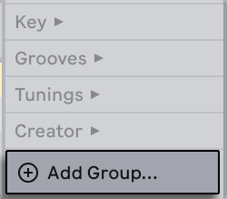
Once a new filter group is created you can add custom tags for that group. As soon as you assign a tag from the group to a browser item, the group will appear in the Filter View, as well as in the Filter View menu. This is a good way to organize browser items for specific uses, such as tagging all of your field recordings or vocal samples in their own unique groups for easy access later.
Instead of adding multiple specialized groups, you can also add subtags to a default or custom tag. Tags that include subtags are called parent tags. You can fold and unfold parent tags by clicking on the arrow next to a parent tag’s name.
To add a subtag, right-click on a tag and choose the Add Subtag in… option. The newly added tag will be nested under the parent tag. Note that it is not possible to create subtags for the tags in the Creator filter group.
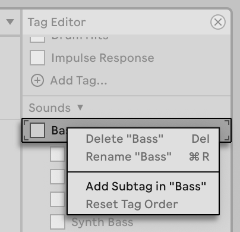
You can rename or delete custom tags and filter groups via their right-click context menus. Note that it is not possible to edit or remove any of the default filter groups or their associated tags.
To close the Tag Editor, press the X button in the upper right corner of the editor or select the relevant option from the Filter View menu.
4.4.4 Quick Tags
You can quickly view the tags assigned to a selected browser item or assign other tags to it using the Quick Tags section.
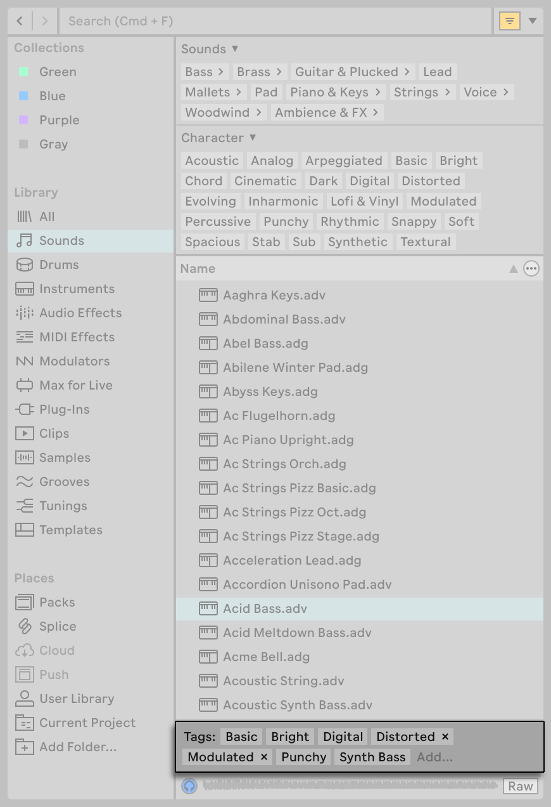
The Quick Tags section shows any tags assigned to the selected item. You can assign additional tags by clicking Add… and then typing the name of a tag. As you start typing, auto-complete suggestions for tags will appear. Once you assign a tag, it will be added to the Quick Tags section in alphabetical order alongside the factory tags.
Apart from assigning existing tags, you can also create new tags directly from the Quick Tags section. To do so, click Add… and start typing the name of a new tag. When you see a Create new tag… prompt appear, press Enter to add the tag. You will then be prompted to select a parent tag or tag group for the new tag.
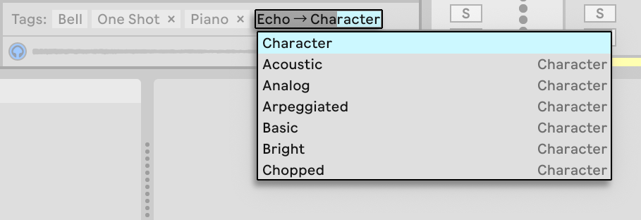
You can select an existing parent tag or group or create a new one. When you type a name that is not recognized as an existing tag or group, you will be prompted again and will have the choice between creating a parent tag or tag group.
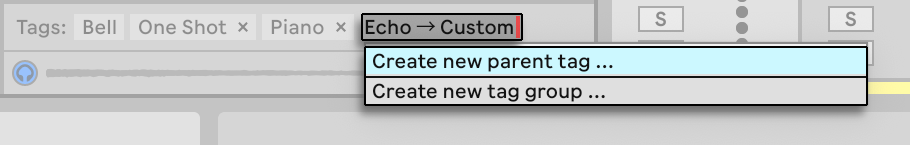
To remove a tag you assigned to an item, use the X next to the tag’s name. Note that it is not possible to remove the default tags assigned to items.
You can assign tags to or remove them from multiple items in the same way as when working with a single item. When multiple items are selected, the Quick Tags section shows all of the tags assigned to any of the items in the selection. Any tags that are not shared between all of the items are marked with an asterisk.
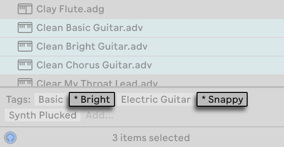
When you select a tag name in the Quick Tags section, the Status Bar displays the filter group in which the tag is located.
The Quick Tags section is visible by default, but you can hide it via the dedicated Open Quick Tags entry in the Filter View menu.
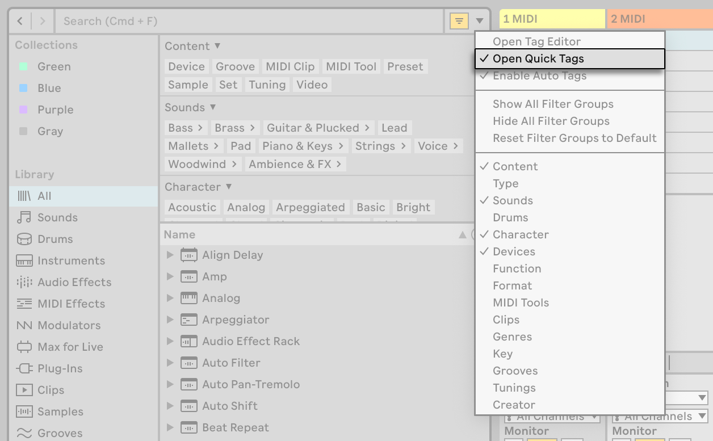
4.5 Collections
The Collections labels each have their own assignable color, which you can use to group different browser items together (including folders) in one place. These labels enable you to quickly organize and access particular browser items (for example, your favorite or most-used items).
You can assign Collections labels via a selected item’s context menu, or by using the number key shortcuts 1 through to 7. Use 0 to reset color assignments.
Note that Collections labels can also be assigned to multiple browser items within a selection. Additionally, it is possible to assign a color label to different item types. For example, you can assign the same color label to a drum sound, a MIDI effect, and a plug-in.
Clicking on a Collections label in the sidebar shows all items tagged with that color. Folders that appear in the Collections labels can be unfolded to show their contents.
In the content pane, square icons indicate the respective color(s) assigned to each item. Note that although multiple colors can be assigned to an item, no more than three of those colors will be shown in the content pane.
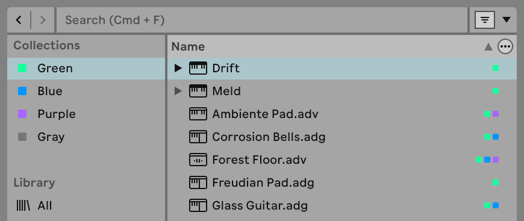
Each Collection label can be renamed via its context menu, or by pressing CtrlR (Win) / CmdR (Mac).
You can choose which labels are visible in the browser by clicking the Edit button, which will appear when hovering the mouse to the right of the Collections header, and checking the Show/Hide Label option next to each label.
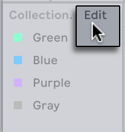
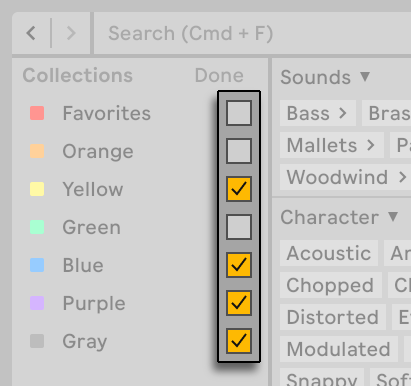
To exit Edit Mode, click the Done button.
Note that when a hidden unassigned color becomes assigned to a browser item, the Collections label for that color will be shown in the sidebar automatically. However, visible color labels are not automatically hidden if all their assignments are removed.
4.6 Library
The Library section consists of various labels that contain different browser items organized by type. You can use the search bar or filters to find and explore all of the available instruments and sounds in your library. The Library section is organized as follows:
- All — all items from every label of the browser in a single list with devices at the start and file types after.
- Sounds — all of your Instrument Racks and instrument presets, as well as any instrument preset tagged with a tag from the Sounds filter group.
- Drums — all of your drum presets. This includes default drum devices, drum presets (full Drum Racks and single drum hits), and drum samples (loops and one shots). In addition, any item tagged with the Drums.
- Instruments — default Live instruments and their presets, as well as all of your Instrument Racks. These are organized by device rather than by the type of sound.
- Audio Effects — default Live audio effect devices and their presets, as well as all of your Audio Effect Racks, organized by device.
- MIDI Effects — default Live MIDI effect devices and their presets, as well as all of your MIDI Effect Racks, organized by device.
- Modulators — default Live modulator devices, as well as any devices tagged with the Modulator tag from the Devices filter group.
- Max for Live — all of your Max for Live devices and presets, as well as any Racks that are built with those devices.
- Plug-Ins — your third-party VST and/or Audio Units plug-ins.
- Clips — all of your Live Clips.
- Samples — all of your raw audio samples.
- Grooves — all of your grooves.
- Templates — all of your template Live Sets.
- Tunings — all tuning systems in the Core Library and user-saved .ascl or .scl files.
By default, all of the Library labels are visible in the browser. You can customize which labels are shown by clicking the Edit button that appears when hovering to the right of the Library header and then selecting or deselecting labels.
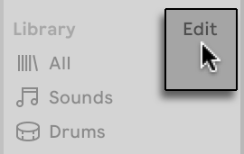
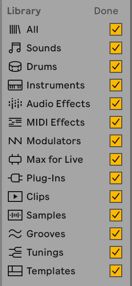
When you are finished, click the Done button to exit Edit Mode.
4.7 Places
The Places labels contain your Live Packs, User Library, Current Project folder, and any external folders that you’ve added to the browser. Additionally, you can enable the Splice, Cloud, or Push labels in Places via the corresponding Library Settings options to access the Splice sample library, files from Ableton Cloud, or files from your standalone Push in Live.
The actual contents of the Places section will vary depending on how you’ve configured your library. Available labels include:
- Packs — contains Live’s Core Library, any additional Packs that you’ve installed yourself, and available Pack updates and downloads.
- Splice — displays the Splice sample catalog, from which you can drag samples into Live.
- Cloud — displays synced Sets from Note and Move when Ableton Cloud is enabled in Live.
- Push — shows all files from Push 3 when connected in Standalone Mode.
- User Library — contains items you’ve saved yourself, such as default presets, grooves, personalized Rack and device presets, samples, Live Clips, etc.
- Current Project — shows all files that belong to the currently open Project.
- User Folder — shows specific folders from any of your hard drives that you’ve added to Live’s browser.
- Add Folder… — opens a window where you can choose a folder from any of your hard drives to add to Places.
4.7.1 Downloading and Installing Packs in the Browser
The Packs label in the browser shows all Packs that come pre-installed with Live, any Packs that you’ve installed yourself, and available Pack updates and downloads.
Installed Packs appear as a folder in the content pane, which can be unfolded to reveal the included Pack contents. Presets, samples, and Live Clips installed by Packs will also appear in the appropriate Library labels.
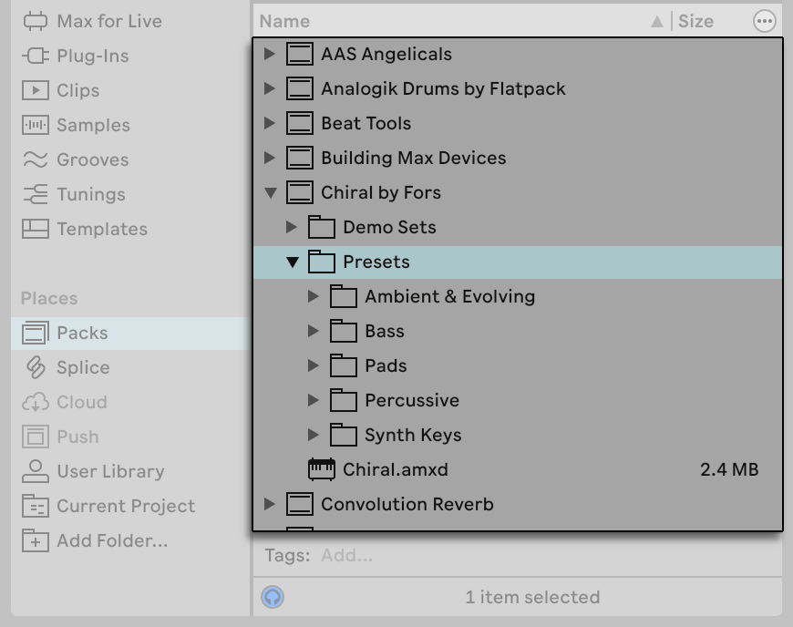
To check for existing updates for your installed Packs, navigate to the Packs label and expand the Updates section.
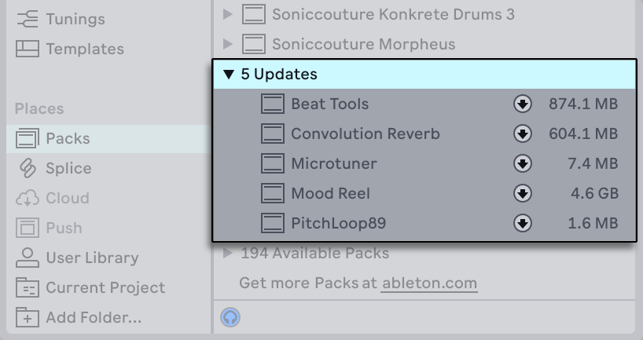
You can also view Packs that you own, but have not installed. These uninstalled Packs appear in the Available Packs section.
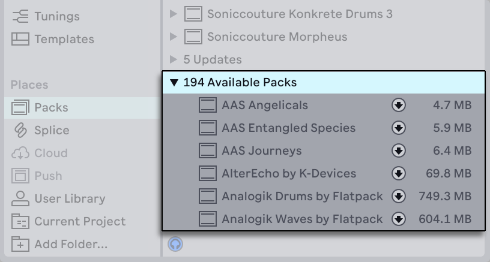
You can download any available Packs or updates by clicking the download icon to the right of the Pack name.
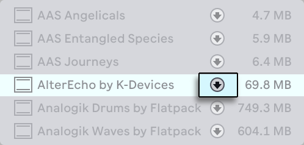
While the Pack is downloading, the download icon changes to a pause icon that also indicates the progress of the Pack’s download.
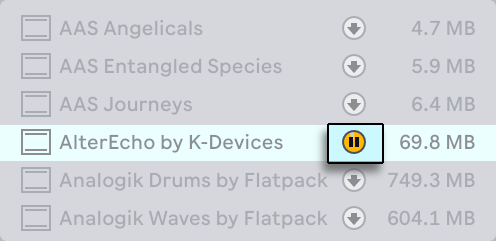
Should you need to, you can pause Pack downloads and resume them at a later point. To pause a download, click the pause icon. When a download is paused, the paused icon changes back to a download icon. To resume a paused download, click the download icon again.
Note that you can also download a Pack, pause, resume or cancel a download, or install a Pack by choosing the appropriate command in that Pack’s context menu.
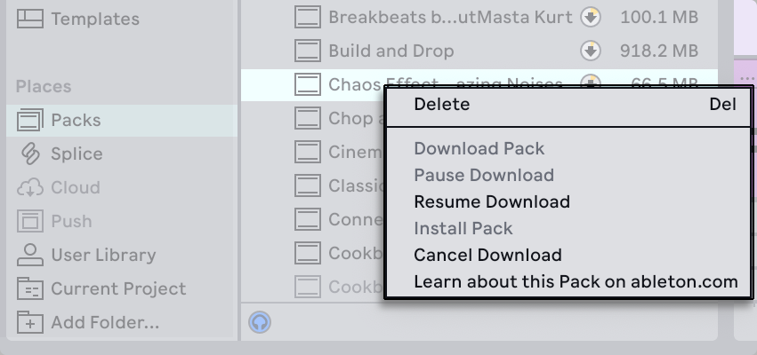
You can download several Packs at once by selecting them in the Available Packs list and then clicking one of the download icons. You can also pause and resume downloading multiple selected Packs using one of their pause icons.
When the download is complete, you can install a Pack by pressing the Install button.
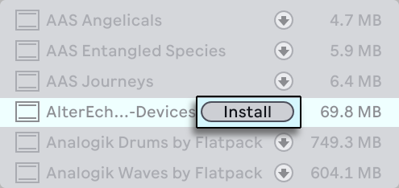
Upon pressing the Install button, Live will display a progress bar in a pop-up dialog that indicates the status of the process.
It can be useful to know the size of a Pack before you download and install it. For example, you may have limited space on your hard drive. You can configure the browser to show the size of all Packs that appear in the Updates and Available Packs sections by selecting the relevant option from the Content Options menu.
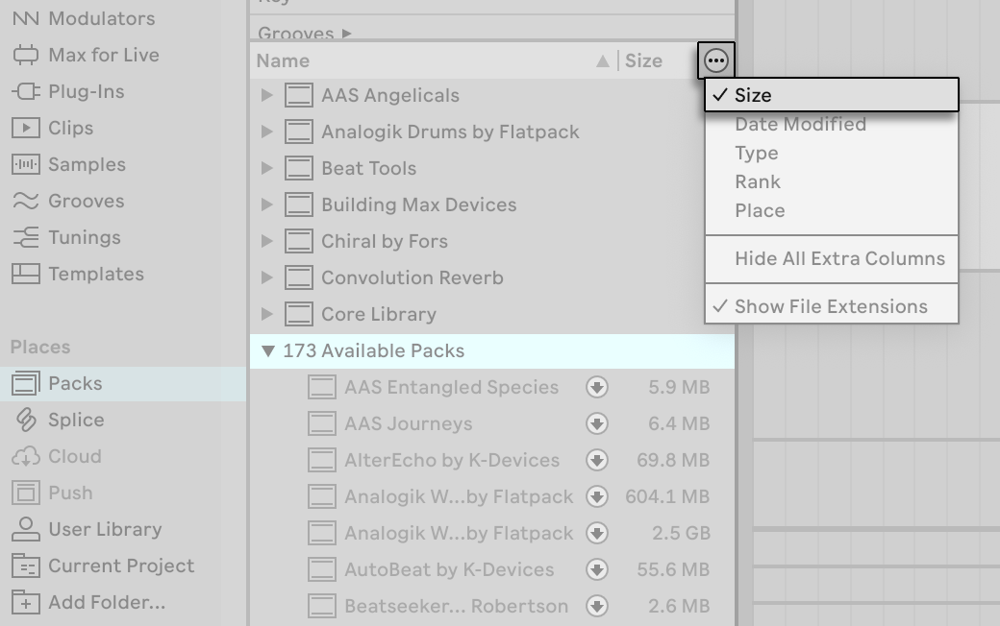
You can delete an installed Pack via its context menu or by selecting it in the browser and pressing the Delete key. Note that deleted Packs will appear once again in your list of Available Packs.
By default, updates and downloadable Packs are shown in the Packs label, however, it is possible to hide the Updates and Available Packs sections. To do so, use the Show Downloadable Packs toggle in the Library Settings.
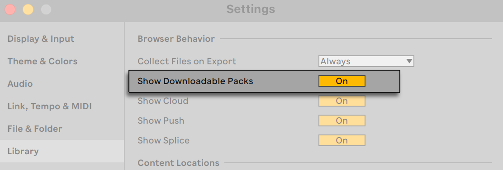
4.7.2 Pack Info
A Pack typically includes a Pack Info page with details about the Pack creator, a short summary of the Pack, and sometimes even a tutorial to help you get started with the Pack. You can view Pack Info pages for all your installed Packs via the Pack Overview option in the Help menu, or open an individual Pack Info page from the browser by selecting the Show Pack Info option from the context menu of an installed Pack.
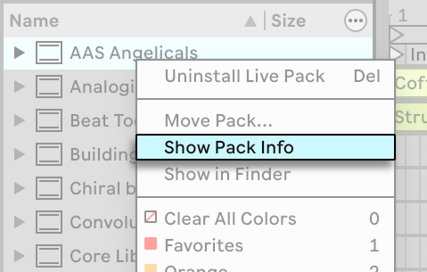
Note that the Core Library does not include a Pack Info page.
4.7.3 Splice
Splice is a royalty-free sample library that you can explore to discover new sounds, which can help enhance your music production. Live’s integration with Splice makes it possible for you to access the sample library via the Splice label in the browser.
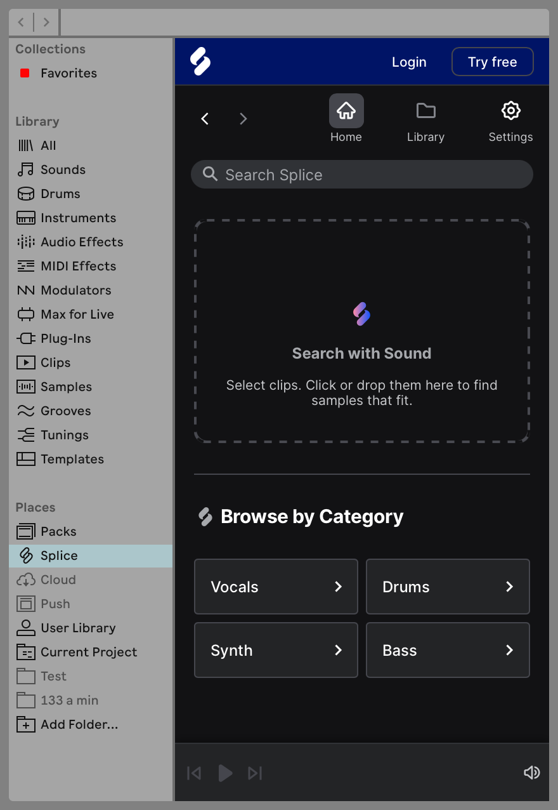
When you click on the Splice label, you will see the Home page, which contains the navigation bar, search bar, Search with Sound drop area, and four sample category buttons that you can use to start browsing the Splice library. You can use the arrows in the navigation bar to step backwards and forwards through all the actions you have taken within the Splice label.
You will also find the options to log in with or create a free Splice account at the top of the content pane in the label.
The Splice label appears in the sidebar by default, but you can also hide it by right-clicking on the label and selecting “Hide from Sidebar”, or by setting the “Show Splice” option in Live’s Library Settings to Off.
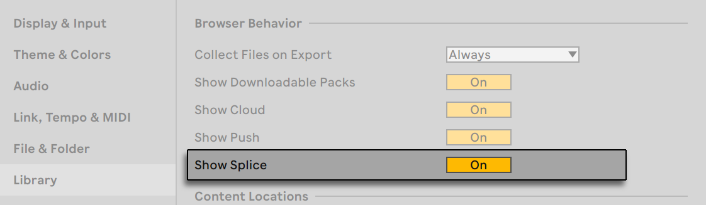
Note that an active internet connection is required in order to view the content in the Splice label.
4.7.3.1 Logging Into Splice
While you can browse and preview samples as soon as you open the label, you will need to log in with your Splice account to add samples to a Set, save samples to your Splice library, or use the Search with Sound functionality. To log in, click Login at the top of the content pane, or, if you do not have a Splice account yet, click on the Try free button instead. Both options will automatically open the default web browser on your OS and redirect you to Splice’s website, where a device confirmation code will be displayed. The same device confirmation code should be simultaneously displayed in the Splice label in Live. Check that the two codes are the same and press Confirm in the web browser.
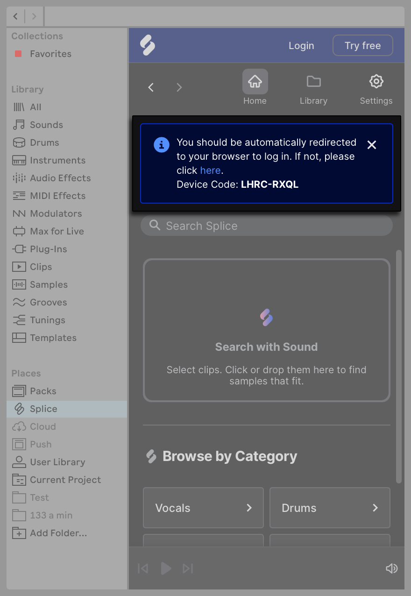
Once you confirm the device, a login page will load in your web browser and you will be able to enter your existing Splice account details or sign up for a new account.
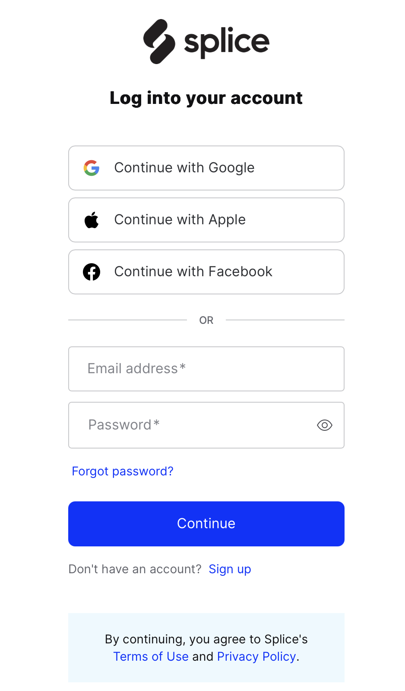
When you are logged in with your Splice account, the Home page for the label looks slightly different: the Library icon in the navigation bar is no longer grayed out and can be used to access your library of Splice sounds, the sample categories buttons are replaced with different browsing buttons and moved to the top of the page, while the Search with Sound drop area is moved to the bottom of the page.
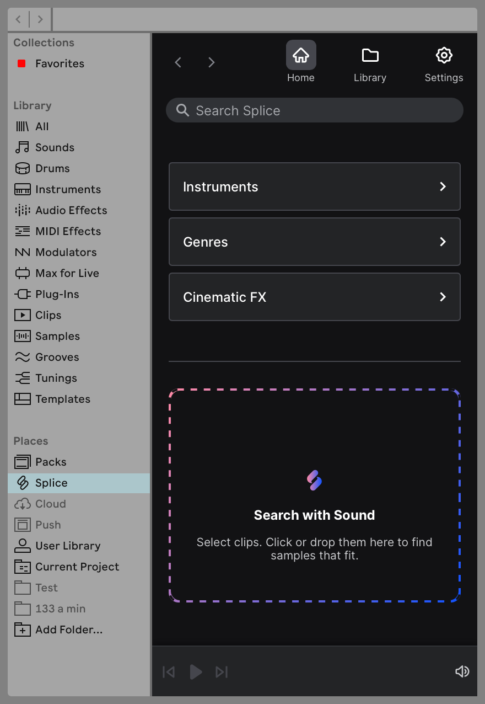
4.7.3.2 Searching for Splice Samples
You can search for samples directly using the search bar. Once you select it, popular search categories are displayed, and you can select one of these suggestions or start typing to search by the term of your choosing. Further suggestions are displayed as you start typing.
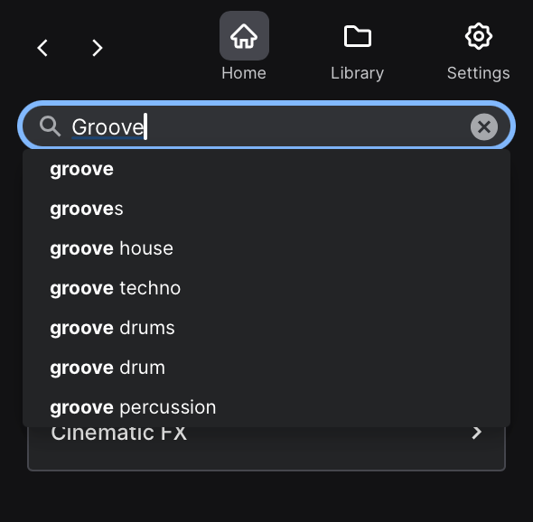
Click on one of the suggestions or press Enter to view the results. Then, choose the “Samples” or “Packs” option at the top of the results to view a list of individual samples or sample packs that contain the search term.
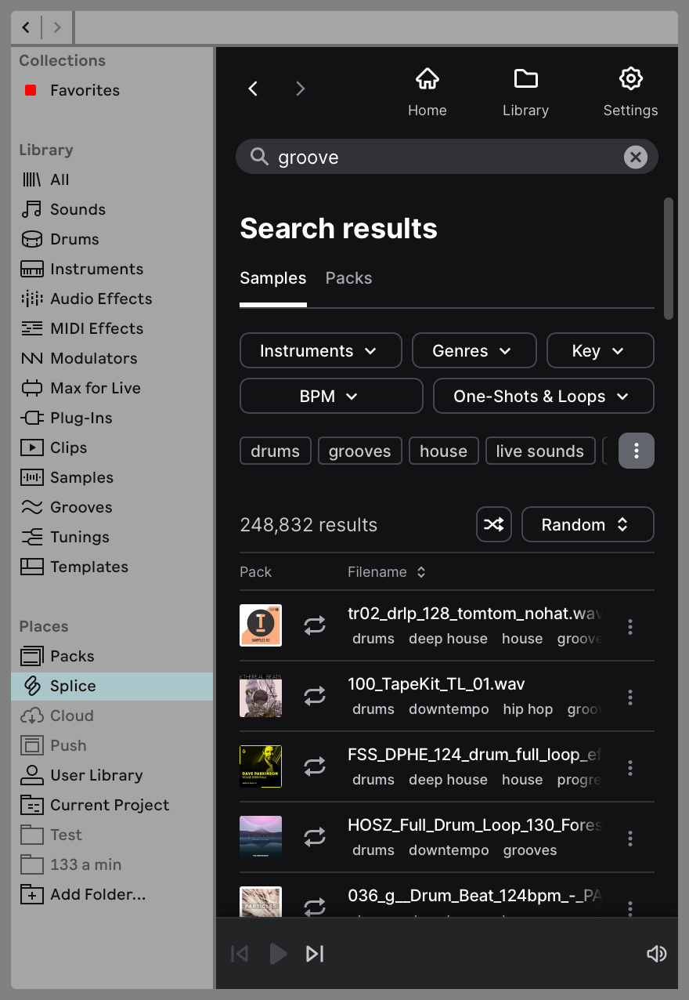
You can further refine the search results using the filters and tags above the results. You can filter by instrument type, music genre, key, tempo, and sample type (one-shot or loop). The tags listed under the filters change depending on the search term and sample category; you can press the three dots button on the right of the list to expand the tag list.
The results can be sorted by most popular, relevant, or recent samples, or you can randomize the list by selecting the “Random” option from the drop-down menu or pressing the shuffle button.
Note that if you are using a free Splice account (or are not logged in), the results will be narrowed down to the samples included with that account; this is indicated by the Included filter at the top of the search results and the “included” tag listed with individual samples. Free Splice accounts come with a library of around 2,500 samples.
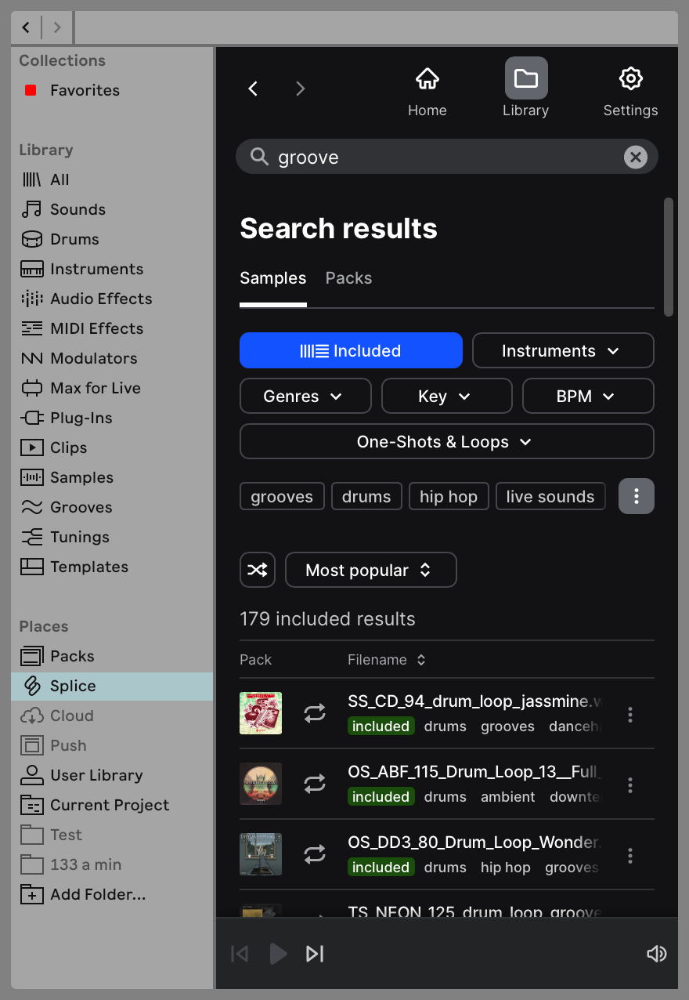
Apart from using the search bar, you can also search for samples using the browsing buttons on the Home page. There are three buttons: Instruments, Genres, and Cinematic FX. Each button opens a view of different sample categories, and each category comes with its own subcategories, of which you can select one to narrow down your search. In the Instruments and Cinematic FX, you can also view all the samples in a given category without selecting one of the subcategories.
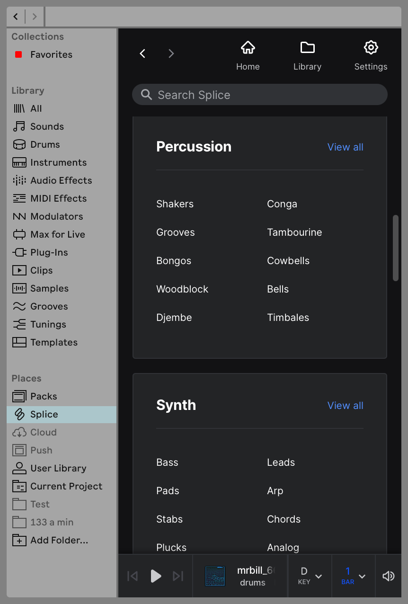
You can also use Splice’s Search with Sound feature to find samples that complement your existing clips. To do so, simply drag a clip from your Set onto the Search with Sound area in the Home page, or make a time selection and click inside the Search with Sound area to capture the selection. The audio will be processed and Splice will return a list of 50 compatible samples. The results page also allows you to replay the sound reference, drag another clip or capture a new selection, and delete the current sound reference.
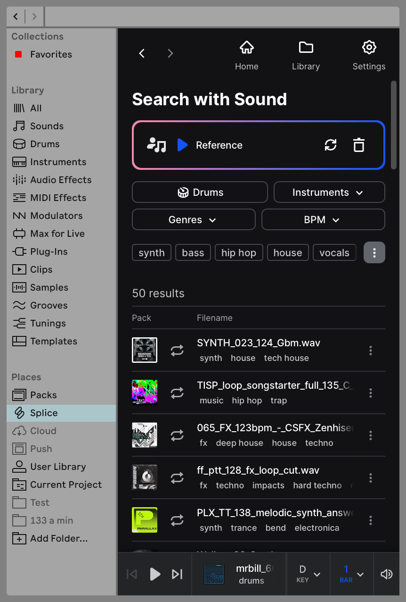
4.7.3.3 Working with Splice Samples
When you enter a search term, select a sample category, or use the Search with Sound feature, a list of corresponding samples is displayed in the content pane.
The search bar is updated to reflect whichever sample category you are viewing, which means that only the samples within the selected category will be searched when you enter a term into the search bar.
Each of the sample entries in the list contains an image of the pack it belongs to (which you can click to view the entire pack), an icon that indicates whether the sample is a one-shot or loop, the sample name, the tags assigned to the sample, and a context menu that allows you to add the sample to Likes or Collections in your library, or view the sample’s pack.
When you hover over a sample, you will see the sample type icon change to the Play button; click the button to preview the sample. Clicking the sample name automatically starts the preview.
By default, samples are previewed on a loop, regardless of whether they are one-shots or loops. You can change this behavior and other preview settings using the options at the bottom of the content pane. For example, loops are synced to your Set’s tempo by default, but you can click on the 1x BPM option and switch off the Timestretch toggle to play the loop at its original tempo. In one-shot samples, you can click on the 1 BAR option to switch off the looped preview.
The preview settings also include an option to transpose samples to a selected key, as well as the option to sync to Live’s scale settings. You can also adjust the loudness of the preview.
When you hover over or select a sample, a heart icon appears next to the sample’s name, which you can click to quickly add the sample to Likes in your library.
You can expand the content pane to view even more information about the samples at a glance, as the following columns appear: Time, Key, and BPM.
Once you find a sample you like, you can drag it onto an audio or MIDI track in your Set. When working in the Session View, you can also load samples by double-clicking on them or pressing Enter. You can also drag samples directly into devices such as Sampler, Simpler, Drum Rack, or Impulse.
Note that clips that use Splice samples have their Warp Mode automatically set to Complex, regardless of the default mode set in the Record, Warp & Launch Settings. This ensures the sample sounds the same as it does when previewing it within the Splice label.
When you load samples into your Set, they are automatically licensed and saved to your Splice library.
By default, samples downloaded from Splice are saved to the User Library in the Splice sub-folder in the Samples folder, but you can select a custom location for Splice samples in the Library Settings. The following options are available:
- User Library — saves the samples to User Library/Samples/Splice.
- Current Project — saves the samples to Current Project/Samples/Splice.
- Custom Folder — saves the samples to any location of your choosing.
4.7.3.4 Splice Library
The Library contains Likes and Collections, as well as any samples you loaded into your Sets in the past, i.e., the samples that have been downloaded to the location you specified in the Library Settings.
You can create a custom sample collection from the Collections page or from the menu in the sample entry. Click on an existing collection to view the samples you have added to it or to edit the collection’s name or description, make the collection private, share a link to it, or delete it.
4.7.3.5 Splice Settings
The Settings page contains options for managing your Splice subscription plan, changing your display settings, and downloading usage logs. The page also includes information about generating certified licenses for the samples you use, a link to Splice’s knowledge base, and an option to share feedback with Splice.
If you are not logged in, the page will also include a Login button.
4.7.4 Using Ableton Cloud
Ableton Cloud is a service that lets you store up to eight Sets from Move and Note, which you can access across all Ableton products. When Cloud is enabled in Live, synced Sets appear in the Places section of the browser.
To enable Cloud functionality in Live, select the Cloud label in the browser sidebar. Selecting it displays a message prompting you to sign in to ableton.com to authorize the service. Click the Sign In button to open a web browser and log into your ableton.com user account.
After Cloud is activated, your synced Sets will appear within the Cloud label.
Note that all factory and imported samples used in synced Sets are stored in the User Library, which must be set and accessible when opening those Sets in Live. If you open a synced Set and see that samples are missing, check whether your User Library is set to a custom location, such as an external hard drive. To relink the samples, make sure the custom User Library location is connected and accessible.
Since Sets can be synced from Move or Note to Live but not the other way around, we recommend using the Collect All and Save command from the File menu when saving synced Sets you’ve developed further in Live. This gathers all samples used in the Set into a single Project folder, which you can then save to a specific location on your computer.
Note that the Cloud label is shown in the browser sidebar by default, but you can also hide the label by setting the “Show Cloud” option in Live’s Library Settings to Off.
4.7.5 Transferring Files from Push 3 in Standalone Mode
You can develop songs continuously between Push and Live: any Set you make in Standalone Mode on Push can be opened on or transferred to your computer. You can also transfer Sets back to Push to continue your work away from your studio, as long as you use native devices, freeze any tracks containing plug-ins, and collect all of your samples into the Project folder.
To access files from Push in Live, make sure that Push is in Standalone Mode and connected to the same Wi-Fi network as your computer. Then, click the Push label in Places. Your Push will appear within the browser’s content pane along with its unique device name. If there are other Push units within range, they will also be shown. If you have several units, you can find the specific “Push xxx-xxx” name in the Status Tab of Push’s Setup menu to confirm which one you want to pair with Live. Click the Connect button to proceed.
On Push, a six-digit code will be displayed; enter this code in the dialog window that appears in Live, and then press OK to continue the pairing process.
Once you’ve successfully paired Push with Live, all of your saved Project folders from Standalone Mode and Push’s User Library will appear in Live’s browser.
As long as Push is paired with Live, you can view any new Sets or changes that you make to existing Sets in Standalone Mode in Live’s browser by switching away from the Push label in Places and then back again to refresh the list of files.
You can unpair Push and your computer by right-clicking on the Push label in Places and selecting Disconnect.
Read more about continuity between Push and Live in the Push manual.
Note that the Push label is shown in the browser sidebar by default, but you can also hide the label by setting the “Show Push” option in Live’s Library Settings to Off.
4.7.6 User Library
The User Library is where all of your saved custom presets, defaults, Live Clips, template Sets, etc., are stored. Because the User Library has its own unique location (separate from other installed content), it can easily be backed up or shared between different Live installations or computers.
By default, the User Library is created at the following location when Live is first installed:
- Windows:
\Users\<username>\Documents\Ableton\User Library - Mac:
Macintosh HD/Users/<username>/Music/Ableton/User Library
You can set a different location for the User Library using the “Location of User Library” option in the Library Settings.
Initially, the User Library is mostly empty; it only contains a set of default folders: Clips, Defaults, Grooves, Presets and Samples. You can add your own custom folders and sub-folders, as well as remove the default folders if needed.
Items that you save to your User Library will also be available in the appropriate Library labels.
4.7.6.1 ABL Assets
If you enable Ableton Cloud and sync some Sets from Move or Note, the assets that are a part of those Sets will be stored in the ABL Assets folder.
4.7.6.2 Chord Banks
The Chord Banks folder contains any custom cord banks you have saved or created for use with the Stacks MIDI Tool.
4.7.6.3 Clips Folder
Live Clips are stored in the Clips folder. You can drag any clip into the folder to save it.
When saving a MIDI clip, the MIDI data (e.g., notes and automation), as well as any device settings, are included.
When saving an audio clip, or a MIDI clip that uses a device that references audio samples (such as Drum Rack, Sampler, etc.), the referenced samples will also be stored with the clip. This happens automatically when the Browser Behavior option “Collect Files on Export” is set to Always in the Library Settings, which is the default setting.
4.7.6.4 Defaults Folder
The Defaults folder contains your saved defaults for tracks, devices, effects, Slicing to MIDI options, and more. Using default presets allows you to recall specific device settings each time you load that device.
See the Default Presets section for more information about saving and using default presets.
For an overview of all the possible defaults in Live, refer to the Using Defaults article in our Knowledge Base.
4.7.6.5 Grooves Folder
The Grooves folder is where your custom groove files are stored.
The timing and volume information from any audio or MIDI clip can be extracted to create a new groove. You can do this by dragging the clip to the Groove Pool or via the Extract Groove command in the clip’s context menu.
Check out the Using Grooves chapter for more details about how grooves work in Live.
4.7.6.6 Presets Folder
The Presets folder contains your saved Instrument, Max for Live, MIDI and Audio Effect presets.
As with saving clips, any referenced audio samples included in the preset will also be saved.
You can read more about saving device presets in the Saving Presets section of the Working with Instruments and Effects chapter.
4.7.6.7 Samples Folder
All referenced samples from saved presets, tracks, etc., are stored in the Samples folder.
A separate folder for recorded samples or processed samples will be created as soon as said samples are saved, depending on their source.
4.7.6.8 Templates Folder
Saved template Sets, as well as any custom default Live Set, are stored in the Templates folder.
See the Template Sets section of the Managing Sets and Files chapter for more details about using templates.
4.7.6.9 Managing Files in the User Library
You can access an overview of your User Library, including its contents, as well as any missing or external files, by selecting the Manage Files option from the File menu and then clicking on the Manage User Library button that appears in the File Manager.
4.7.7 Current Project
The Current Project label contains all of the files that are included in the currently loaded Project.
You can access all of the tracks in the Set (including their clips and devices), the Return and Main tracks, as well as any loaded grooves.
Once a Project has been saved at least twice, a Backup folder will appear in the Current Project label.
This folder contains the last ten saved versions of the Live Set. You can identify backup Sets by the timestamp in brackets next to the Set name. Live automatically deletes the oldest backup Set once there are more than ten backups. Deleted backups are moved to the trash bin.
This feature can be especially useful if you have accidentally overwritten a Project file, or want to access a previous version of your Live Set.
If you’re working on a Live Set that you haven’t yet saved, there is no Backup folder, and the current Project refers to a temporary location.
You can right-click on the Current Project label and select Show in Explorer (Win)/Finder(Mac) to open the Project folder’s location on your computer.
Check out the Live Projects section of the Managing Files and Sets chapter for in depth information regarding how Project folders and Sets work in Live.
4.7.8 User Folders
Live’s browser allows you to work with your creative tools regardless of where they are installed on your computer. This allows you to, for example, store large sample collections on one or more external drives, and still use the browser to access their contents - there is no need to keep files in a single centralized location.
In order to work with your own folders in Live, you must first add them to the browser, either by dropping them directly into the Places section from the Explorer (Win)/Finder (Mac), or by using the Add Folder option in the browser’s sidebar.
After adding a user folder, Live will scan it, which “teaches” the browser about its contents. How long the scanning process takes depends on the number of files and sub-folders contained in the folder. A spinning wheel next to the Places label indicates that scanning is still in progress. Once completed, the files in the folder will be accessible from Places.
Adding a user folder does not actually move the folder to a new location, but simply makes it available in Live’s browser. If you reorganize your drives using Explorer (Win)/Finder (Mac), Live may not be able to find user folders that have been moved or renamed. Additionally, if a user folder is contained on an external hard drive, and Live is opened while the drive is not connected, the folder will not be found.
A user folder that cannot be located by Live will still appear in the browser but its name will be grayed out. You can attempt to find it by using the context menu’s Locate Folder command, or tell Live to “forget” the folder via the Remove from Sidebar command. You can also use this command to remove folders that aren’t missing, but which you simply don’t want to work with anymore.
Note: Only add discrete content folders to Places rather than entire hard drives. Adding hard drives or very large folders can slow the indexing process, or the content may need to be continually re-indexed each time Live is started.
4.8 Navigating in the Browser
Moving through the files in Live’s browser can be done with either the mouse or the computer keyboard:
- Scroll up and down in a browser label with the up and down arrow keys, the mousewheel, or by clicking and dragging while holding the CtrlAlt (Win) / CmdOption (Mac) modifier.
- Close and open folders, or move between the sidebar and content pane with the left and right arrow keys.
By default, any previously open folders will close when you open a new one, but you can override this behavior by holding Ctrl (Win) / Cmd (Mac) while opening new folders.
4.9 Previewing Files
Live allows you to preview samples, clips, and instrument presets directly in the browser. This can help give you an idea of how something sounds before adding a new element to your Set.
To enable previewing, activate the Preview toggle next to the Preview Tab at the bottom of the browser.
Once enabled, you can preview a file in the browser by selecting it. Use the up and down arrow keys to move between files and their audio previews.
You can preview files even when the Preview toggle is not enabled by pressing ShiftEnter or the right arrow key when a browser item is selected.
When a file is being previewed, a waveform is shown in the Preview Tab. You can click in the scrub area to make playback jump to that point. Note that it is not possible to scrub clips that have been saved with Warp turned off.
By default, the Raw button is deactivated, which allows Live to preview files at the beginning of the next bar when transport is running. This helps you get an idea of how the sound fits into your current project. Enable the Raw button to preview files at their original tempo. Audio previews are looped when Raw is deactivated and unlooped when Raw is enabled.
Please note that scrubbing is not possible when Raw is enabled.
You can adjust the volume of audio previews using the Main track’s Preview/Cue Volume knob.

If you have an audio interface with at least four dedicated outputs (or two dedicated stereo outputs), you can preview or cue files via headphones connected to a separate pair of outs — while the music continues to play from the Main outputs. Check out the Soloing and Cueing section of the Mixing chapter to learn how to set up Live for cueing.
4.10 Adding Content from the Browser to a Live Set
There are several ways to add browser content to a Live Set:
- Items can be dragged and dropped from the browser into tracks in the Session or Arrangement View. Dragging and dropping content from the browser into the space to the right of Session View tracks or below Arrangement View tracks will create a new track and place the new item(s) there.
- In the Session View, double-clicking or pressing Enter on a device in the browser will load it into the currently selected track. Similarly, double-clicking or pressing Enter on a sample will load it into the currently selected track. Samples will be loaded into a Simpler device for MIDI tracks, or into a clip slot for audio tracks.
- In the Arrangement View, double-clicking or pressing Enter on a device or sample in the browser will load the item onto whatever track is currently selected.
- Files can also be dropped directly into Live from the Explorer (Win)/Finder (Mac).